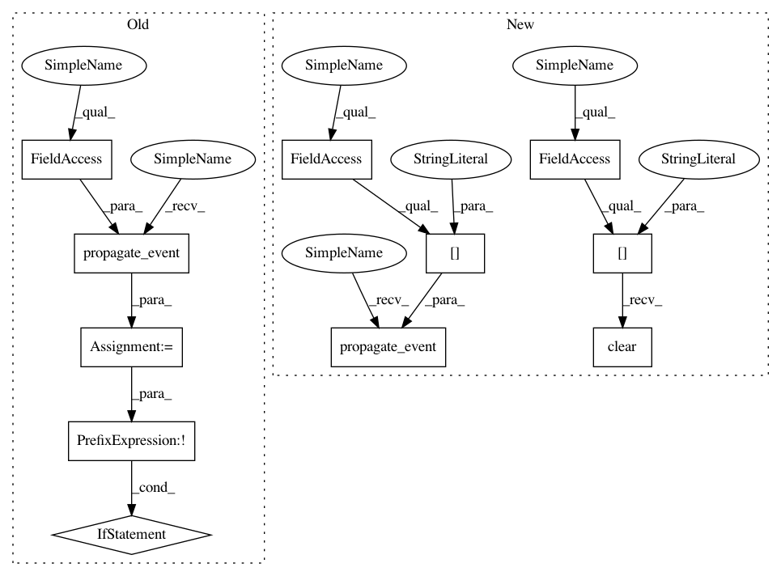

b528d4811f2a0249530cae546a5d1ee899344307,dipy/viz/interactor.py,CustomInteractorStyle,on_middle_button_up,#CustomInteractorStyle#Any#Any#,124
Before Change
def on_middle_button_up(self, obj, evt):
self.middle_button_down = False
abort_flag = self.propagate_event(evt, *self.active_props)
if not abort_flag:
self.default_interactor.OnMiddleButtonUp()
def on_mouse_moved(self, obj, evt):
abort_flag = self.propagate_event(evt, *self.active_props)
if not abort_flag:
After Change
def on_middle_button_up(self, obj, evt):
self.middle_button_down = False
self.propagate_event(evt, *self.selected_props["middle_button"])
self.selected_props["middle_button"].clear()
self.default_interactor.OnMiddleButtonUp()
def on_mouse_move(self, obj, evt):
// Only propagate events to active or selected props.
In pattern: SUPERPATTERN
Frequency: 3
Non-data size: 11
Instances
Project Name: nipy/dipy
Commit Name: b528d4811f2a0249530cae546a5d1ee899344307
Time: 2016-10-14
Author: marc.cote.19@gmail.com
File Name: dipy/viz/interactor.py
Class Name: CustomInteractorStyle
Method Name: on_middle_button_up
Project Name: nipy/dipy
Commit Name: b528d4811f2a0249530cae546a5d1ee899344307
Time: 2016-10-14
Author: marc.cote.19@gmail.com
File Name: dipy/viz/interactor.py
Class Name: CustomInteractorStyle
Method Name: on_left_button_up
Project Name: nipy/dipy
Commit Name: b528d4811f2a0249530cae546a5d1ee899344307
Time: 2016-10-14
Author: marc.cote.19@gmail.com
File Name: dipy/viz/interactor.py
Class Name: CustomInteractorStyle
Method Name: on_right_button_up